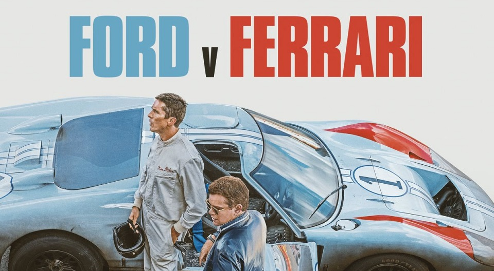

Ford vs Ferrari
Istoria este plină de rivalități celebre. Cele mai multe provin dintr-o apucare a puterii sau din mândria rănită – câteva sunt o combinație a celor două. Cele mai bune relații controversate sunt însă cele care creează cele mai legendare povești. Luați saga despre modul în care Henry Ford al II-lea - a.k.a., Hank the Deuce - a încercat să achiziționeze Ferrari în 1963, declanșând o ceartă de aproape un deceniu între el și Enzo Ferrari, omul cu voință puternică care a deținut producătorul italian de automobile.
În esență, narațiunea Ferrari versus Ford – care este tratată integral de la Hollywood în noul film Ford v. Ferrari, în care au ca protagonisti câștigători ai premiilor academiei Matt Damon și Christian Bale – povestește o afacere care a mers prost și reacția unui titan auto, încăpățânat și egoist. care a fost dispus să cheltuiască aproximativ 25 de milioane de dolari și mii de ore-om de inginerie pentru a-și răzbuna mândria. Pentru Ford, asta însemna să învingi Ferrari în cea mai prestigioasă cursă de mașini din lume, 24 de ore de la Le Mans, pe care Calul Ras o dominase istoric.
|  |
Începutul
Povestea începe la începutul anilor 1960. Obiceiurile de cumpărare din SUA s-au schimbat pe măsură ce generația Baby Boomer a devenit majoră. Pentru prima dată în istorie, tinerii au fost mai importanți pentru rezultatul afacerilor americane decât părinții lor. Boomers aveau o mulțime de venituri disponibile de cheltuit pe articole precum mașini, haine și case și, spre deosebire de părinții lor „un ban economisit este un ban câștigat”, care au trăit prin Marea Depresiune și al Doilea Război Mondial, ei căutau ceva unic. dintr-un vehicul nou. Ei doreau mașini mai sportive și mai sexy, care pretuiesc viteza și performanța în detrimentul confortului și fiabilității. Au vrut mașini sport, fapt care nu a fost pierdut de directorii de la Ford Motor Co.
În 1962, Ford ieșea dintr-un derapaj major de vânzări datorită produselor eșuate precum Edsel și popularității tot mai mari a produselor rivale de la GM și Chrysler. CEO-ul Henry Ford II, fiul cel mare al lui Edsel Ford și nepotul cel mare al lui Henry Ford, căuta cu disperare o modalitate de a schimba curentul. Directori de top, inclusiv directorul general al Diviziei Ford, Lee Iacocca, l-au convins că răspunsul a fost o mașină sport.
Rivalii: Cel mai faimos și mai puternic CEO din America în anii șaizeci, Henry Ford al II-lea (dreapta), luptă împotriva lui Enzo Ferrari, posibil cel mai narcisist om care a pășit pe pământ.
A existat o singură problemă: Ford nu avea o mașină sport în portofoliu și nu existau planuri de a construi una. (Legendarul Mustang al lui Iacocca era încă la câțiva ani distanță de producție.)
S-a hotărât că cel mai convenabil mod de a aduce un vehicul pe piață ar fi achiziționarea unuia. Atunci a fost lansată ideea de a cumpăra Ferrari, care în acei ani era în primul rând o companie de mașini de curse care vindea mașini legalizate doar pentru a-și finanța exploiturile pe circuit.
În primăvara anului 1963, după luni de negocieri, un acord părea să fie aproape. Ford i-ar plăti milioane lui Enzo Ferrari pentru compania sa și pentru toate activele acesteia. Fost pilot de curse, Enzo era dornic să încheie o înțelegere cu Ford, o mișcare care să-l scutească de povara conducerii companiei de zi cu zi. Dar la cea de-a unsprezecea oră, Ferrari s-a refuzat la o clauză din contract care spunea că Ford va controla bugetul și, astfel, toate deciziile care guvernează echipa de curse Ferrari. Enzo nu a fost dispus să renunțe la controlul programului de sport cu motor al companiei sale. El le-a spus reprezentanților Ford că nu va vinde niciodată în acești termeni – și nici, a adăugat el, că nu va vinde unei companii urâte care construiește mașini urâte într-o fabrică urâtă. Se zvonește că l-a insultat personal pe Henric al II-lea, insinuând că nu putea să-i țină o lumânare bunicului său, adevăratul Henry Ford.
 |
Răzbunarea lui Ford
Pentru a se răzbuna, Deuce a decis să construiască o mașină sport care să umilească Ferrari acolo unde conta cel mai mult pentru el, 24 de ore de la Le Mans. S-au semănat semințele pentru legendara mașină de curse GT40.
Inițial, sarcina de a construi așa-numitul Ferrari Killer a fost atribuită grupului de vehicule avansate Ford din Regatul Unit. Ei dezvoltau deja un vehicul care să folosească un motor creat de grupul experimental de motoare Ford, situat în Dearborn, Michigan.
Deși primul lot de GT40 care a ieșit din Advance Vehicle Group a fost rapid, ele au fost, de asemenea, incredibil de instabile și nesigure. Iar frânele erau de-a dreptul periculoase.
Potrivit Popular Mechanics, inginerii Ford au calculat că, atunci când un șofer a apăsat frânele la capătul drumului Mulsanne din Le Mans, rotoarele de frână din față se încălzesc până la 1.500 de grade Fahrenheit în câteva secunde, făcându-le defectarea. Acest lucru s-ar dovedi a fi dezastruos – chiar mortal – pentru orice șofer care încearcă să concureze în nord-vestul Franței, chiar și cel mai bun din lume.
În cele din urmă, echipa Ford nu a putut să-și dea seama cum să facă mașinile să rămână ferm pe asfalt, cu atât mai puțin să ruleze continuu timp de 24 de ore, două elemente obligatorii pentru o victorie la Le Mans. După ce a pierdut cu Ferrari la Le Mans în 1964 și 1965, Ford a apelat la legendarul designer de mașini din Los Angeles Carroll Shelby, unul dintre singurii piloți americani care a câștigat vreodată la Le Mans, pentru a conduce operațiunile de curse. Shelby (interpretat în film de Matt Damon) era deja consultant al proiectului, dar acum era responsabil, responsabil pentru succesul sau eșecul acestuia.
Victorie!
Toată munca lor grea a dat roade, iar GT40 Mk. M-am născut. Ford nu doar a învins Ferrari la Le Mans în 1966, ci i-a umilit pe armăsarii italieni. Deși Ferrari nu avea nici măcar o mașină care să fi încheiat cursa, GT40 Mk. II a ocupat primul, al doilea și al treilea loc.
Finalul nu a fost lipsit de controverse. La sfârșitul cursei, Miles a fost cu mult înaintea competiției, pe cale să pună capăt dominației Ferrari la Le Mans și să devină singurul pilot care a câștigat cele mai mari trei curse de anduranță din lume - cele 24 de ore de la Daytona, 12 ore de la Sebring și 24 de ore. din Le Mans — în același an.
Gurul de relații publice de la Ford, Leo Beebe, a vrut să sărbătorească victoria cu o fotografie cu trio-ul trecând împreună linia de sosire. Așadar, i-a cerut lui Shelby să-i ordone lui Miles să încetinească și să lase celelalte echipe GT40 să ajungă din urmă. După ce a trecut linia, Miles a fost informat că nu a câștigat cursa. Coechipierul său Bruce McLaren a făcut-o. McLaren a pornit mai multe mașini în spatele lui Miles. Deci, deși Miles a fost mai rapid până la sfârșit, McLaren a călătorit de fapt mai departe, deoarece Miles a încetinit intenționat.
Din păcate, Miles a murit înainte de a putea concura din nou la Le Mans. La sfârșitul anului 1966, el testa o altă mașină de curse Ford pe Riverside International Raceway din California când și-a pierdut controlul și s-a prăbușit. Miles nu a supraviețuit accidentului.
Între timp, Deuce a primit un al doilea gust de răzbunare anul următor la Le Mans - un Ford GT40 Mk. IV construit de Shelby (care a murit în 2012 la 89 de ani) a câștigat cursa din 1967. Ferrari a terminat pe locul doi.
În ceea ce privește Ford GT40, marele supercar american rămâne unul dintre cele mai de colecție automobile din lume, cu un preț autocolant care ar arunca în spate părul oricărui șofer.Ford GT MkII se vinde cu 1,2 milioane de dolari, prima mașină dintr-o fabrică Ford care a costat mai mult de un milion. Răzbunarea, se pare, încă plătește.